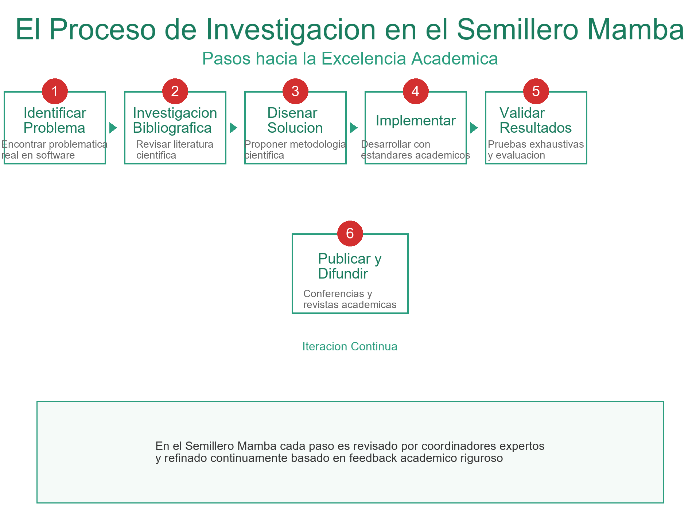
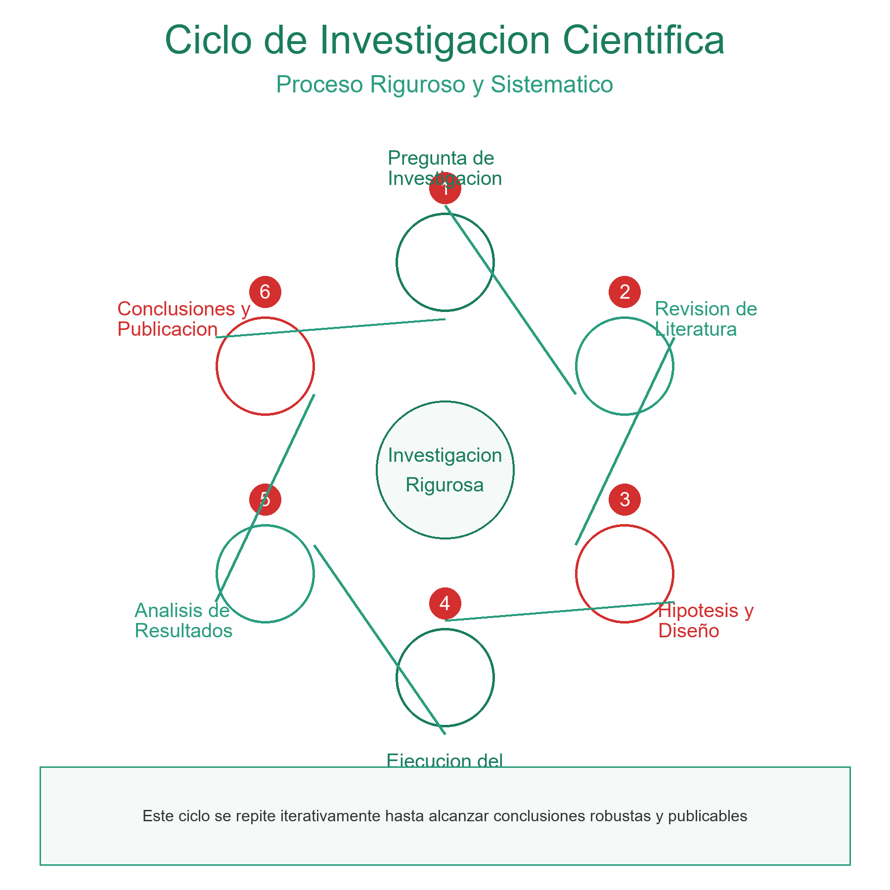

Descubriendo el Mundo de la Investigación Académica
Cuando nuestros estudiantes ingresan al Semillero Mamba, muchos llegan con una pregunta común: "¿Por qué la investigación?" Este blog post nace de esas conversaciones iniciales, de los primeros pasos titubeantes, y de la transformación que ocurre cuando descubres que eres capaz de generar conocimiento nuevo.
Los Primeros Pasos: Dudas y Entusiasmo
La investigación académica puede parecer un camino imposible cuando recién comienzas. Nadie te enseña exactamente cómo comenzar, y los libros de metodología parecen escritos en otro idioma. Nuestros estudiantes iniciales sintieron exactamente lo mismo. Sin embargo, descubrieron que con el apoyo adecuado, la mentoría de profesores experimentados y el trabajo en equipo, el proceso se vuelve no solo comprensible, sino fascinante.
"El primer día pensé que no sería capaz, pero después de escuchar los problemas reales que necesitaban soluciones, vi que la investigación era algo tangible y alcanzable."
¿Qué es Realmente la Investigación?
En el Semillero Mamba, descubrimos que la investigación no es solo leer papers o escribir reportes. Es un proceso vivo donde:
- Identificas problemas reales: En desarrollo de software, calidad de software, análisis de datos y arquitectura
- Propones soluciones: Basadas en métodos científicos y pruebas rigurosas
- Aprendes continuamente: De tus errores y de las contribuciones de tu equipo
- Generas impacto: Tus resultados pueden ayudar a empresas y otras instituciones académicas
- Creces profesionalmente: Adquiriendo habilidades que te diferencian en el mercado laboral
Nuestras Líneas de Investigación
En el Semillero Mamba, trabajamos en cuatro líneas estratégicas que reflejan los desafíos actuales de la ingeniería de sistemas:
💻 Desarrollo de Software
Exploramos metodologías ágiles, patrones de diseño, y arquitecturas modernas que permiten crear software de calidad de forma eficiente.
✅ Calidad de Software
Investigamos técnicas de testing, aseguramiento de calidad, y mejora continua de procesos para garantizar que el software sea confiable y mantenible.
📈 Análisis de Datos
Aprendemos a extraer insights valiosos de grandes volúmenes de datos, utilizando herramientas modernas y técnicas estadísticas avanzadas.
🏗️ Arquitectura de Software
Diseñamos sistemas escalables, mantenibles y resilientes, considerando patrones arquitectónicos que resuelven problemas empresariales complejos.
La Metodología del Semillero
Lo que hace especial al Semillero Mamba es nuestra metodología práctica:
- Mentoría personalizada: Trabajamos con profesores con experiencia en investigación y en la industria
- Proyectos reales: Abordamos problemas auténticos que requieren soluciones innovadoras
- Colaboración: Trabajamos en equipos multidisciplinarios donde aprendes a comunicar ideas complejas
- Publicación y difusión: Nuestros resultados se comparten en conferencias y revistas académicas
- Impacto empresarial: Buscamos transferir tecnología a las empresas de nuestra región
Testimonios de Nuestros Estudiantes
👨🎓 Juan (Semestre 4)
"Cuando llegué, no sabía ni cómo leer un paper académico. Hoy estoy contribuyendo a un proyecto sobre testing automatizado. La diferencia es la guía de mis coordinadores y el ambiente colaborativo."
Ingeniería de Sistemas
👩🎓 María (Semestre 6)
"Lo que más me gusta del semillero es que no solo aprendes teoría. Trabajas en problemas que importan, usas tecnología moderna, y construyes tu portafolio profesional desde temprano."
Ingeniería de Sistemas
¿Cómo Puedo Comenzar?
Si te sientes identificado con esta descripción, aquí es lo que tienes que hacer:
1. Accede al grupo de WhatsApp del Semillero Mamba
2. Contacta a nuestros coordinadores: Ing. Julián Quimbayo e Ing. José Miguel Llanos
3. Asiste a nuestras reuniones semanales (Miércoles, 5:00 PM - 5:40 PM)
4. ¡Comienza tu viaje de investigación!
Reflexión Final
La investigación no es privilegio de pocos. Es una disciplina que cualquier estudiante comprometido puede aprender y dominar. En el Semillero Mamba, creemos que el verdadero aprendizaje ocurre cuando combinamos teoría, práctica, mentoría y la pasión por generar conocimiento nuevo.
Tu primer proyecto, tu primer paper, tu primer descubrimiento... todo comienza con un simple paso: decidir que eres más que un consumidor de conocimiento. Que eres un generador de conocimiento. Y eso, mis queridos estudiantes, puede cambiar todo.
— Comunidad Semillero Mamba
← Volver al Blog